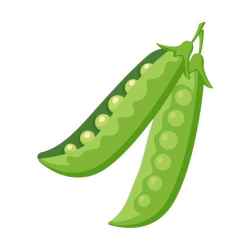

The Mangetout project
The names comes from "man get out"; you, outside and appreciate the out doors
Why not a mardle
10
Why not when you're feeling a bit het up, take a breather and stretch your legs for a 10 minute mardle. It's a right good way to feel the sun on your face or the wind in your hair.
Just a quick break, and you'll be as right as rain in no time at all. It's a chance to stop, look at the clouds, and just exist for a bit without any bother.
You might hear a bird song you've never noticed before or the rustle of a squirrel going about its business. It's a proper way to ground yourself when things get too much.
It's not about a big journey, just a small bit of the outside world, right where you are. It reminds you that beauty and calm are always close by if you only look.
By the time you're back at it, you'll feel a good bit better, refreshed and ready for whatever's next. A simple mardle does the world of good.
Have a Shufti
15
Take a moment to just stop and have a good old shufti at the world around you. Really look at the trees and the way the light hits the leaves. See the little insects crawling about and the birds flying high in the sky.
It's a chance to just be still and take in all the details you normally miss when you're in a rush. It gives your mind a rest and a bit of wonder.
You'll find that the world is a sight more interesting than you thought, full of little things just waiting to be noticed. It's a way to feel connected to the land, just by paying attention.
Go for a jaunt
25
When you've got a lot on your mind and need to have a proper ponder, a half-hour jaunt is just the thing. It's not a race, mind you. Just a steady wander to sort out your thoughts, free from all the noise.
The rhythm of your feet on the path helps your thoughts fall into place. It's a good way to let your mind chew on whatever's botherin' you, without the distractions of the telly or your phone.
The air on your skin and the changing scenery give your brain something else to focus on for a bit, a nice backdrop for your mind's work. The simple act of moving forward helps you feel like you're making progress.
You might notice little things you normally walk past, like a flower in a hedge or an old signpost. The walk itself is a bit of a meditation, a way to be present in the moment.
By the time you get back, your mind will feel a sight clearer, ready to face whatever comes next with a bit more calm.
A Meander by the Wherry
30
Find a river or a stream and just follow the path alongside it. The Wherry boats used to move goods along these waterways, and there's a proper peaceful feeling about the place.
The gentle flow of the water and the sounds of the bankside birds are a right good way to clear your head. It's a proper meander, a walk without a big purpose beyond enjoying the moment.
You'll see dragonflies and fish, and the big old trees that hang over the water. It’s a bit of a classic walk, and for a good reason.
Ramble to the Pub
30
Fancy a bit of a longer walk? Go on a proper ramble down the winding lanes and across a field or two. See what's on at the local, and have a natter with the folk there.
This ain't just a walk; it's a social expedition. You'll pass by fields where crops are growing and old trees that have seen a thing or two. It's a way to appreciate the simple beauty of the countryside.
The pub at the end is a grand reward. That pint or soft drink tastes all the better for the effort you put in to get there. It's a real treat, a little something to look forward to.
You might run into a few old pals or meet some new faces. A proper good natter over a drink is a good way to end the journey and feel connected to the folk who live on the land.
A ramble like this is good for the body and the soul, a chance to get a bit of exercise and some good company all in one.
Spot a Banger
40
Keep your eyes peeled for a real classic. It could be an old tractor sittin' in a field, a vintage car tucked away in a barn, or even a fancy new one parked up just for show.
The joy is in the hunt. You're out there on your own time, with nothing to do but look around and see what you can find. It's a bit of a treasure hunt, a chance to find something unexpected and interesting.
Finding a 'banger' is a proper treat, a little surprise to brighten your day and remind you to look at the world around you. Every now and then, you see a real gem that makes you stop and stare.
It's a hobby that makes you appreciate the old things and the new, the history in the countryside, and the creativity that people put into their machines. It gives you a reason to walk down a different road.
A good banger is a conversation starter. You can take a picture and show your mates, or just keep it as a little secret memory for yourself.
A Daddle by the Sea
40
There's nothin' quite like a good daddle by the sea to blow the cobwebs away. Take a walk along the shore, feel the sea breeze on your face, and listen to the gulls cry.
The big sky and wide-open space will make any troubles you're carryin' feel a sight smaller. The sheer size of the sea puts things in perspective, you see.
You can look for bits of sea glass, pretty shells, or just feel the sand between your toes. The constant sound of the waves is a real calming thing, a natural rhythm that soothes the mind.
The salt in the air and the smell of the ocean are a proper sensory experience. It's a complete escape from the everyday, a chance to just be with your thoughts and the big blue.
Whether it's a calm day or a stormy one, a daddle by the sea is always a good idea. It reminds you of the power and beauty of the natural world and how lucky we are to have it.
Climb a Mound
45
When things feel like they're gettin' on top of you, get up high. Find a proper hill or a mound and climb to the top.
The climb itself is a good bit of effort, a way to focus your body on something other than your mind's worries. Each step is a step away from what was botherin' you.
From up there, you can see for miles and miles. The villages and roads look like a map, and your own worries seem a bit more manageable when you see 'em in perspective.
You can sit for a while and just watch the world go on below you, feeling the wind and hearing the silence. It's a powerful feeling, a proper sense of accomplishment.
By the time you come back down, you'll be tired in a good way, with a clear head and a new feeling of purpose. A good climb is a proper reset.
Find a Fen
65
The fens are a right old quiet place, full of reedbeds and water. It's a proper trek to get out there, but it's worth it for the peace.
You'll hear nothing but the wind in the reeds and the sounds of nature. It's a grand place to have a peaceful think and a good look about.
The stillness of the water and the tall grasses give you a feeling of being in a proper wild place, a spot that hasn't changed much in a hundred years or more.
You might spot a marsh harrier soaring overhead or a dragonfly skimming the water's surface. It's a place where you can really feel a part of the landscape.
The feeling of finding a fen and spending time there is a reward in itself. It's a reminder that quiet, untamed beauty still exists in the world.
Go Gormin'
60
This is for when you want to truly unwind. Find a nice spot—maybe a field gate, a bench by a pond, or a little hill—and just sit there, gormin' at the view.
There's no agenda here. Just a chance to watch the birds, see the clouds drift by, or stare at the patterns in the grass. It's a proper bit of nothingness, and that's the point.
The silence is a good companion, and it gives your mind a chance to catch up and feel a bit of peace. It's a simple pleasure that gives a world of rest.
Go on a Lollop
85
A lollop is more than a walk; it's a proper journey. Pack some grub and your boots and head out to a new village or a different parish.
This is a chance to be a bit of an explorer, to see what's over the next hill or around the next corner. You'll pass by different sorts of houses, see new fields, and maybe even find a path you've never been on before.
You'll see new sights, meet new folks, and get to know the world a little bit better. It's a day for the senses, an adventure from your own front door.
The journey itself is the main thing here. The feeling of putting one foot in front of the other for hours on end is a proper meditation. It helps you get out of your own head and into the world.
By the time you get home, you'll feel tired but full of good memories. You'll have seen what the world has to offer and know you can handle a proper day's walk.
Bird Watchin'
80
This is for a calm soul. Grab your binoculars and find a quiet spot. See if you can spot a sparrowhawk, a proper coot, or maybe even a bittern if you're lucky.
It's a patience game, but the reward is seeing the natural world in a way you don't normally. You have to be still and quiet, which is a good lesson for the mind.
You get to observe the little lives going on all around you, the birds building their nests, finding food, or just sitting on a wire. It's a glimpse into another world right next to our own.
The feeling of spotting a rare bird you've only ever seen in a book is a real thrill. It's a moment of connection with something wild and beautiful.
Bird watching reminds you to slow down and pay attention to the small things. It's a quiet, peaceful hobby that brings a lot of joy.
A Night's Trek
90
The world is a different place at night. The air is cool, the sounds are different, and the sky is full of stars, if the clouds stay away.
It's a bit spooky at first, but you soon get used to it. Your other senses get stronger, and you'll be surprised at what you can hear and smell when the world is dark.
A night's trek is for when you want to feel small under the big sky, a reminder that the world is bigger than any of your troubles. The quiet stillness is a proper thing to experience.
You might hear the hoot of an owl or the call of a fox in the distance. The shadows and moonlight make the world look new and mysterious, even in places you know well.
It's a bold and peaceful thing to do, a way to connect with the night and find a bit of courage in the dark. You'll be glad you did it.
Find a Hideaway
100
Go find a secret spot. A little grove of trees, a quiet bench by a pond, or a field with no one else about. This is a quest for solitude, a place that is just your own.
The search for it is half the fun. You'll take paths you've never taken before and see things you've always walked past. It's a way to find a bit of wilderness in your own patch.
This is your place to be on your own, to just sit and exist without having to put on a show for anyone. It's a spot for reflection, for quiet thought, or for no thoughts at all.
A proper hideaway is a place for your soul. It's where you can recharge and feel a sense of peace that you can't get anywhere else.
Once you find it, it's a place you can come back to whenever you need a moment of peace, a personal sanctuary in the great outdoors.
Forage for Goodies
120
This is a proper old skill, foraging for what the land gives you. Look for berries in the hedgerows, nuts in the woods, or mushrooms if you know what you're doing, mind.
It's a bit of an education, a way to learn about the plants and trees around you. It connects you to the natural world in a very direct way, by using what it provides.
The feeling of finding something good to eat that you've found yourself is a proper good feeling. It's a taste of history and a reminder of how our ancestors lived.
This activity makes you slow down and really look at the ground and the trees around you. It's a very mindful and rewarding experience, a simple pleasure that feels like a real achievement.
Just remember to be careful and make sure you know exactly what you're picking. Best to go with someone who knows what they're doing for the first few times.
A Day's Outin'
160
This is the big one. An all-day outing where you pack up and don't come home until it's getting dark. It's a whole day of fresh air, good food, and seeing new things.
You can go to a new patch of woods, find a different part of the coast, or walk a big loop in the countryside. The day is yours, with no agenda but to be outside and enjoy it.
It's a way to feel the full span of a day in the open, from the early light to the evening chill. You'll see the landscape change as the sun moves across the sky.
By the time you get home, you'll be tired, but you'll have a good feeling in your chest, knowing you've had a proper go at it. Your body will be tired but your mind will be rested.
A full day's outin' is a good reminder that the best things in life can be found outside, and they don't cost a thing.